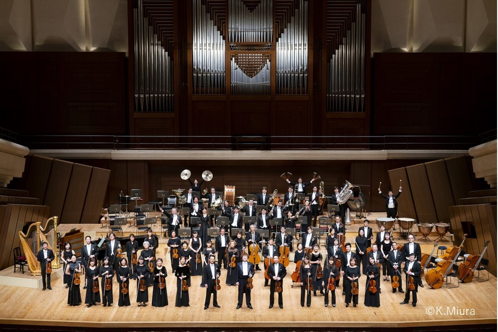

エリーナ・ガランチャ メゾソプラノ リサイタル2025
■ 2025年6月17日(火) 17:30開場 18:30開演
東京オペラシティコンサートホール
〈ピアノ伴奏〉
■ 2025年6月21日(土) 13:00開場 14:00開演
サントリーホール
〈オーケストラ伴奏〉
主催：朝日新聞社、テイト・コーポレーション
企画・招聘：テイト・コーポレーション
演奏：新日本フィルハーモニー交響楽団
※地方公演
■ 愛知公演 2025年6月19日(木) 愛知県芸術劇場 コンサートホール
※未就学児入場不可
公演スケジュール
| 日時/開演時間 | 会場 | チケットセンター お問合せ |
料金 |
|---|---|---|---|
| 6月17日(火) 開場17:30 開演18:30 |
東京オペラシティコンサートホール | 03-6774-1968 テイト・チケットセンター |
【全席指定】 S席21,000円 A席18,000円 B席15,000円 |
| 6月21日(土) 開場13:00 開演14:00 |
サントリーホール | 03-6774-1968 テイト・チケットセンター |
【全席指定】 SS席28,000円 S席26,000円 A席24,000円 B席21,000円 C席18,000円 P席15,000円 |
プロフィール
エリーナ・ガランチャは、ラトビアのリガ出身のメゾソプラノ歌手で、その卓越した声と舞台上のカリスマ性で世界中の観客を魅了しています。音楽一家に生まれ、リガのラトビア音楽アカデミーで学び、その後ウィーンとアメリカで研鑽を積みました。彼女のキャリアは1999年のヘルシンキでのミルヤム・ヘリン国際声楽コンクールでの優勝から始まりました。
エリーナは、特にジョルジュ・ビゼーの「カルメン」役で高い評価を得ています。ニューヨーク・タイムズは彼女を「過去25年で最高のカルメン」と称賛しました。この役で彼女はメトロポリタン・オペラ、ロイヤル・オペラ・ハウス、バイエルン国立歌劇場などで主演し、そのパフォーマンスは映画館でもライブ上映され、大成功を収めました。彼女のレパートリーは幅広く、モーツァルトの「フィガロの結婚」のケルビーノや、ロッシーニの「チェネレントラ」のアンジェリーナ、ワーグナーの「パルジファル」のクンドリなどがあります。
また、2023年にはバイロイト音楽祭でラトビア人女性として初めてクンドリ役を演じ、その功績が称えられました。彼女は2005年からドイツ・グラモフォンと専属契約を結び、アルバムは何度もエコー・クラシック賞を受賞しています。エリーナは、夫のカレル・マーク・チチョンと共に、若手アーティストを支援する「ZukunftsStimmen」というプロジェクトにも力を入れています。
エリーナ・ガランチャの魅力は、その美しい声と知性的な音楽性にあります。彼女は常に観客を魅了し続け、その圧倒的な存在感と情熱的なパフォーマンスで、今後もオペラ界をリードし続けることでしょう。
エリーナは、特にジョルジュ・ビゼーの「カルメン」役で高い評価を得ています。ニューヨーク・タイムズは彼女を「過去25年で最高のカルメン」と称賛しました。この役で彼女はメトロポリタン・オペラ、ロイヤル・オペラ・ハウス、バイエルン国立歌劇場などで主演し、そのパフォーマンスは映画館でもライブ上映され、大成功を収めました。彼女のレパートリーは幅広く、モーツァルトの「フィガロの結婚」のケルビーノや、ロッシーニの「チェネレントラ」のアンジェリーナ、ワーグナーの「パルジファル」のクンドリなどがあります。
また、2023年にはバイロイト音楽祭でラトビア人女性として初めてクンドリ役を演じ、その功績が称えられました。彼女は2005年からドイツ・グラモフォンと専属契約を結び、アルバムは何度もエコー・クラシック賞を受賞しています。エリーナは、夫のカレル・マーク・チチョンと共に、若手アーティストを支援する「ZukunftsStimmen」というプロジェクトにも力を入れています。
エリーナ・ガランチャの魅力は、その美しい声と知性的な音楽性にあります。彼女は常に観客を魅了し続け、その圧倒的な存在感と情熱的なパフォーマンスで、今後もオペラ界をリードし続けることでしょう。
カレル・マーク・チチョン プロフィール
カレル・マーク・チチョン（Karel Mark
Chichon）は、ロンドンで生まれ、ジブラルタル出身の指揮者として知られています。その情熱と音楽的才能で多くの聴衆を魅了し、2012年には英国女王エリザベス2世から大英帝国勲章（OBE）を授与されました。チチョンはロイヤル・アカデミー・オブ・ミュージックとウィーンのホッホシューレ・フュア・ムジークで学び、ジュゼッペ・シノーポリやワレリー・ゲルギエフのアシスタントを務めました。
彼はグラーツ交響楽団やラトビア国立交響楽団の首席指揮者を務め、現在はグラン・カナリア・フィルハーモニー管弦楽団の首席指揮者兼芸術監督として活躍しています。また、ドヴォルザークの全交響曲の録音プロジェクトを成功させ、その演奏は批評家から高く評価されました。
チチョンは、妻であるメゾソプラノ歌手のエリーナ・ガランチャと共に、若手音楽家の育成プロジェクト「ZukunftsStimmen」を通じて、若い才能を支援しています。その卓越した音楽性と情熱で、今後も多くの人々を魅了し続けることでしょう。
マルコム・マルティノー プロフィール
エディンバラに生まれ、ケンブリッジ大学のセント・キャサリンズ・カレッジと英国王立音楽大楽に学ぶ。
同世代の中でもトップレベルの伴奏者として認められており、これまでにウィグモア・ホールやエジンバラ・フェスティバルで自身のコンサート・シリーズを行っている。
2004年、英国王立スコットランド音楽院から名誉博士号を授与される。また、09には同音楽院伴奏科の「インターナショナル・フェロー」に任命され、後進の指導にあたっている。
11年には、リーズ・リーダー（歌曲）・フェスティバルで音楽監督を務めた。
同世代の中でもトップレベルの伴奏者として認められており、これまでにウィグモア・ホールやエジンバラ・フェスティバルで自身のコンサート・シリーズを行っている。
2004年、英国王立スコットランド音楽院から名誉博士号を授与される。また、09には同音楽院伴奏科の「インターナショナル・フェロー」に任命され、後進の指導にあたっている。
11年には、リーズ・リーダー（歌曲）・フェスティバルで音楽監督を務めた。
新日本フィルハーモニー交響楽団 プロフィール

「一緒に音楽をやろう！」1972年、小澤征爾、山本直純の下、自主運営のオーケストラとして創立。
1997年、すみだトリフォニーホールを本拠地とし、日常の練習と公演を行う日本初の本格的フランチャイズを導入。定期演奏会、特別演奏会、楽員プロデュース「室内楽シリーズ」のほか、地元の学校体育館や小中学校の音楽授業、各種施設の訪問など、地域に根ざした演奏活動も精力的に行う。
1999年、小澤征爾が桂冠名誉指揮者に就任、歴代の指揮者には、初代音楽監督・小泉和裕(1975年～79年)、第２代音楽監督・井上道義(1983年～88年)、第３代音楽監督・クリスティアン・アルミンク(2003年～13年)、第４代音楽監督・上岡敏之(2016年～21年)。その他、ダニエル・ハーディングがMusic Partner of NJP(2010年～16年) 、インゴ・メッツマッハーがConductor in Residence(2013年～15年)を務めた。新日本フィル・ワールド・ドリーム・オーケストラの音楽監督に久石譲(2004年～)、また新日本フィルのMusic Partner（2020年～）も務めている。
受賞歴に第3回三菱信託音楽賞奨励賞、第18回三菱UFJ信託音楽賞、第22回ミュージック・ペンクラブ音楽賞等多数。
2023年4月より佐渡裕が第５代音楽監督に就任。街・ホール・オーケストラが一体となった音楽活動を行う。
公式ウェブサイト：www.njp.or.jp
公式X：@newjapanphil
公式Facebook：/newjapanphil
公式Instagram: /newjapanphil
1997年、すみだトリフォニーホールを本拠地とし、日常の練習と公演を行う日本初の本格的フランチャイズを導入。定期演奏会、特別演奏会、楽員プロデュース「室内楽シリーズ」のほか、地元の学校体育館や小中学校の音楽授業、各種施設の訪問など、地域に根ざした演奏活動も精力的に行う。
1999年、小澤征爾が桂冠名誉指揮者に就任、歴代の指揮者には、初代音楽監督・小泉和裕(1975年～79年)、第２代音楽監督・井上道義(1983年～88年)、第３代音楽監督・クリスティアン・アルミンク(2003年～13年)、第４代音楽監督・上岡敏之(2016年～21年)。その他、ダニエル・ハーディングがMusic Partner of NJP(2010年～16年) 、インゴ・メッツマッハーがConductor in Residence(2013年～15年)を務めた。新日本フィル・ワールド・ドリーム・オーケストラの音楽監督に久石譲(2004年～)、また新日本フィルのMusic Partner（2020年～）も務めている。
受賞歴に第3回三菱信託音楽賞奨励賞、第18回三菱UFJ信託音楽賞、第22回ミュージック・ペンクラブ音楽賞等多数。
2023年4月より佐渡裕が第５代音楽監督に就任。街・ホール・オーケストラが一体となった音楽活動を行う。
公式ウェブサイト：www.njp.or.jp
公式X：@newjapanphil
公式Facebook：/newjapanphil
公式Instagram: /newjapanphil